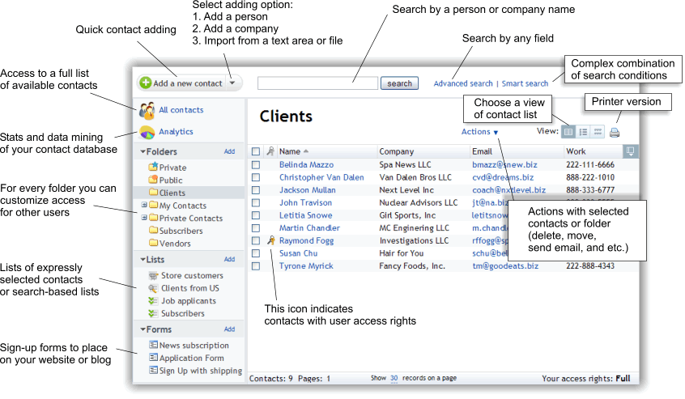

|
WebAsyst Contacts at a glance
|
|
|
|
|
Adding contactsNew contacts can be added in several different ways: |
|
|
Adding a single contact- Click the black triangle in the right-hand part of the "Add a new contact" button and select "Person" or "Company".
Note: Person-adding and company-adding pages have individual fields relevant to their specific contact types. A click on the "Add a new contact" button without the use of the black triangle will open the person-adding page by default.
- Enter the new contact's details in text fields on the next page. Be sure to fill the required fields "First name" and "Last name" for a person, and the "Company" field for a company-type contact.
- To display additional contact fields, click the corresponding section titles: "Phone numbers", "Instant messengers", "Home address", etc. In order to display all additional contact fields, click "Display all fields". Enter contact's details in additional fields, if desired.
- Select the name of the folder where the new contact should be added.
Note: You must have access level "Write" for the selected folder to be able to add a contact.
- Complete the contact creation by clicking on "Save". If you want to add another contact of the same type again, choose the "Save and add another" button instead.
|
|
|
Adding multiple contacts at one time- Click the black triangle in the right-hand part of the "Add a new contact" button and select "Import contacts".
On the next page select the "Import from text" option and enter the new contacts' details in the text area below. Each contact's data set must be placed in a separate line, with data items separated from each other by a comma. Each contact's data fragments within a line must follow each other in the same order in which they are displayed on the contact-adding page. - Use the drop-down list at the page bottom to select the name of the folder where the new contacts should be added.
Tip: If the target folder was open when the contact import function was initiated, then the desired folder will be selected automatically.
Note: You must have access level "Write" for the selected folder to be able to add contacts.
- Complete the contacts adding by clicking on "Import".
|
|
|
Import from a file- Click the black triangle in the right-hand part of the "Add a new contact" button and select "Import contacts".
On the next page select the "Import from file" option and locate a file on your computer containing contacts' data. WebAsyst Contacts supports CSV files in which data items are separated from each other by a comma or a semicolon, as well as address book files exported from email clients such as Outlook. A CSV file can be created using popular spreadsheet editors, e.g., OpenOffice.org Calc or Microsoft Excel, or even a plain text editor. Each contact's information must be placed in a separate line of the file. In order to import an email address book, first export it from your email client program. Refer to your email client user manual on how to export an address book to a file. - Use the drop-down list labeled "Encoding" to specify the encoding of your file. Select the name of the target folder in WebAsyst Contacts using the "Add to folder" drop-down list below.
Tip: If the target folder was open when the contact import function was initiated, then the desired folder will be selected automatically.
Note: You must have access level "Write" for the selected folder to be able to import contacts.
- Click "Import" at the page bottom.
- The next page will display the list of data columns retrieved from the file. Select the names of contact properties above each column to determine where each column's contents should be imported.
- If the first line of the file being imported contains column titles (such as "First name", "Last name", "Phone number", etc.), disable option "Import first line" under the list of columns. Otherwise this option should be enabled.
- Complete the file import by clicking "Import" at the page bottom.
|
|
|
Automatic import of customers from Shop-ScriptIf you have established an online store based on Shop-Script in your WebAsyst account, contact details of all your customers are automatically imported into the "Store customers" list available in WebAsyst Contacts. To view the list of store customers, click the name of the "Store customers" list in the left navigation pane. In order to refresh the customer list, select menu item "Actions -> Update". Note: You must have access level "administrator" for WebAsyst Contacts to be able to view and manage the "Store customers" list.
|
|
|
|
|
Editing contact propertiesAll properties of any contact residing in a folder accessible to user can be changed; for example, you may need to edit a contact's phone number or postal address. Note: You must have access level "Write" for the contact's parent folder to be able to edit its properties.
- In order to edit a contact, open the folder where it resides or a list which contains the contact.
- Click the name of the contact.
- On the contact's details page click "Edit" in the "Contact information" section of the right-hand pane.
- Edit the contact's properties in text fields and click "Save".
|
|
|
Bulk contact editingInstead of manually editing several contacts one by one, you may use the bulk contact editing feature to save your time. Bulk editing allows you to quickly edit several contacts in one step. To edit several contacts at once, open a folder, a list, or the search results viewing page. Select the contacts which you would like to edit, and click menu item "Actions -> Actions with selected contacts -> Bulk editing". The next page will contain a table with contact editing fields. Enter the desired values in table cells. If some contacts need to be deleted, check the "delete" option for such entries. The number and order of contact fields on the bulk editing page is easily configurable. To add or delete fields, or change their order, click "Customize visible columns" in the top-right corner. In the pop-up window move field names to the "Visible columns" or "Hidden columns" list boxes, change the order of visible fields using arrows buttons, and click "Save". In order to quickly copy equal values to several fields of selected contacts, use the "Bulk replacement in columns" link at the top. A click on that link will display an additional area corresponding to contact fields. Enter the desired values in one or several fields inside the replacement area and click "Apply". The entered values will be copied to the corresponding fields of all contacts on the bulk editing page. Complete bulk editing by clicking "Save changes". Note: You must have access level "Write" to the folders containing contacts which are selected for bulk editing.
|
|
|
Customizing contact fieldsEach type of contacts (person and company) in WebAsyst Contacts has an individual set of fields relevant to the specific type. For instance, for persons important are such fields as "First name", "Last name", "Birth date", and to companies most relevant are "Title", "CEO's name", "Fax number", etc. WebAsyst Contacts offer a large number of different fields for each type by default. However, you can still easily add new fields or customize existing ones according to your needs. - In order to customize data fields of a certain type of contacts, open a contact-adding or editing page for that type as described above in sections "Adding a single contact" and "Editing contact properties".
- Click the "Customize fields" link in the right-hand pane of the window.
The next page will display the fields and sections customizing interface. Follow the instructions below to edit or add new contact fields and sections. Editing sections: In section settings you can change a section's name and order relative to other sections. - In order to change a section's settings, click "Edit" to the right of the section name (e.g., "Phone numbers" or "Instant messengers").
- Change the section name for all localization languages available in your account.
- Select the name of the section after which the currently edited one should be placed.
- Click "Save".
Tip: If you only need to change the position of a section, use the "Move" link instead of "Edit".
Adding new sections: - In order to add a new section, click the "Add a new section" button in the right-hand pane of the window.
- Enter the section name in the pop-up window. If you use several localization languages in your WebAsyst account, click "Add name in other language" and enter a translation.
- Use the drop-down list at the bottom to select the name of an existing section after which the new one should be added.
- Complete the section creation by clicking "Save".
Editing fields: On the fields customizing page the following editing options are available: - "Required": enabling this option will make the modified field required on the contact-adding or editing page.
- "Edit": change the field name and the type of stored data.
- "Move": change the field's position relative to other fields, including those residing in other sections.
- "Disable": temporarily disable the ability to enter or edit data in this field. Disabling a field will automatically delete all contacts' data stored in it. No other fields will be affected by this action.
- "Delete": completely delete a field from the database and all contacts' data stored in it. No other fields will be affected by this action.
Tip: Be careful when changing the data type of a field, disabling or deleting fields, as your actions may result in irrevocable loss of valuable information!
Adding new fields: - In order to add a new section, click the "Add a new field" button in the right-hand pane of the window.
- Enter the field name in the pop-up window. If you use several localization languages in your WebAsyst account, click "Add name in other language" and enter a translation.
- Use the "Field type" labeled drop-down list to select the data type for the new field. Specify additional parameters for several data types:
- for the "Text (single line)" type enter the maximum number of characters which can be stored in the field;
- for the "Numeric" type select the maximum precision of decimal fractions which can be stored;
- for the "Menu" type enter several values — each in a separate line; these values will be used as selectable items of a drop-down list on a contact-adding or editing page.
- Use the "Place this field after" labeled drop-down list to select the name of the field, after which the new field should be added.
- Complete the field creation by clicking "Save".
|
|
|
Moving contactsNote: You must have access level "Write" both for the source and for the target folder to be able to move a contact.
- In order to move contacts to another folder, open a folder, a list, or a search results view page, and mark the contacts which should be moved.
- Click menu item "Actions -> Actions with selected contacts -> Move to another folder".
- On the next page select the target folder.
- Complete the contacts moving by clicking "Move".
|
|
|
Deleting contactsNote: You must have access level "Write" for a folder to be able to delete contacts from it. Removing a contact from a list does not delete it from the database – this action only modifies the contents of the specific contact list. In order to actually remove the contact from the database, delete it from the folder where it resides.
A contact can be deleted by several different methods: Method 1. - Open the folder containing the contact.
- Mark the contact which should be deleted and click menu item "Actions -> Actions with selected contacts -> Delete".
- Confirm deletion in a dialog box.
Method 2. - Open the folder containing the contact.
- Click the name of the contact which should be deleted.
- On the page with the contact's details click "Delete this person" or "Delete this company" (depending on the type of the selected contact) in the right-hand pane of the WebAsyst Contacts window.
- Confirm deletion in a dialog box.
|
|
|
Contact searchWebAsyst Contacts offers a powerful search tool, which allows you to retrieve lists of contacts satisfying configurable selection parameters. Tip: The search feature is a convenient tool for creation of dynamic contact lists based on the search conditions. In order to create a search-based list, perform a search and click menu item "Actions -> Save as a list". The name of the new list will appear in the left-hand navigation pane under the "Lists" caption.
The search feature is available in several modes: simple search by name, advanced search and smart search. |
|
|
Simple search by nameSimple search always finds: - all persons, whose names and email addresses contain the search text;
- all organizations where the title contains the search text;
- all persons who are members of such organizations.
The simple search field is always available at the top of the Contacts window. In order to perform simple search, enter the desired search text and click the "search" button or press Enter. |
|
|
Advanced searchAdvanced search finds all contacts for which all entered search values are available in the corresponding contact properties. - In order to perform advanced search, click the "Advanced search" link next to the simple search field at the page top.
- On the next page enter search values in fields corresponding to different contact properties.
- Should you need to search through additional fields (e.g., phone numbers, postal address, personal information, etc.), click the corresponding section title to display the section contents and enter the search values in the desired fields.
- Section "Additional conditions" allows you to narrow down your search results by specifying the following parameters:
- name of the user who added the contacts;
- name of the folder, where search should be performed;
- date when the contacts were added.
- Run the search by clicking the "Search" button at the page bottom.
Tip: The more fields are filled, the more exact are the search results.
|
|
|
Smart searchSmart search is the most flexible search mode in WebAsyst Contacts. In addition to specifying search values, you can also select a search condition AND/OR. - In order to perform smart search, click the "Smart search" link next to the simple search field at the page top.
- On the next page use the first drop-down list to select the name of contact property which should be searched.
- The second drop-down list is used to select the matching type:
- "contains/exactly matches/starting with/does not contain" to search in text fields;
- "earlier than/exactly matches/later than/in the range" to search in date-type fields;
- "greater than/equal to/less than" to search in numerical fields.
- Enter the search value in the text field:
- string or number — to search in text or numerical fields;
- select the date using the built-in calendar — to search in date-type fields.
- If other contact properties should be involved in the search as well, click "Add search condition".
- In the new row of the search form select the condition type AND or OR and fill other fields as described above in steps 2—5. If you do not need any row of the search form, remove it by clicking on "delete" on the right.
Note: All rows of the search form can have only equal condition types (AND or OR).
- Run the search by clicking the "Search" button under the search form.
|
|
|
Communicating with contacts |
|
|
Sending email messages to contactsYou can send email messages to any number of contacts directly from WebAsyst Contacts without the use of the WebAsyst Mail service. Emailing contacts using WebAsyst Contacts lacks several convenient functions of the Mail service; however, it allows you to quickly send a message with the help of a simple but feature-rich interface. - In order to send an email message to one or several contacts, open a folder, a list or the search results view page.
- Mark the contacts to which a message should be sent.
- Click menu item "Actions -> Send email".
- On the next page, the "To" field will contain the list of email addresses of all selected contacts. Edit this list manually, if desired, and add necessary addresses to the "CC" and "BCC" fields.
- Specify the message subject and compose the message text using the built-in HTML text editor.
- To attach a file to your message, click the "Attach file" link at the page bottom and select the file on your computer.
- Click "Send" to send the message.
|
|
|
Sending SMS messages to contacts- In order to send an SMS message to one or several contacts, open a folder, a list, or the search results view page.
- Mark the contacts to whom the message should be sent.
- Click menu item "Actions -> Send SMS".
- The "To" field on the next page will contain the mobile phone numbers of all selected contacts.
- If desired, manually edit the list of phone numbers according to the interface instructions under the "To" field.
- Enter the message text in the field below. Note the allowed maximum number of characters when typing.
- Send the message by clicking "Send".
|
|
|
Contact exportAny list of contacts can be exported to a text file. WebAsyst Contacts allows you to export contacts to a CSV file where data fragments are separated from each other by a comma, a semicolon, or a tab character. - In order to export a contact list to a CSV file, open the desired contact folder or all contacts view page (by clicking the "All contacts" button at the top of the left navigation pane).
- Mark the contacts which should be exported and click menu item "Actions -> Actions with selected contacts -> Export".
- In the pop-up window select which contacts should be added to the file — only the selected ones or all contacts from the selected folder.
- Use two list boxes below to select the columns (contact fields) which should be exported. The selected fields are displayed in the left list box, and those excluded from export are in the right list box.
- Use the "Delimiter between columns" labeled drop-down list to select the character which will be used to separate data fragments within a line of the exported file: a comma, a semicolon, or a tab character.
- Complete the export by clicking "Export". Then a file saving dialog will open – use it to select the folder on your computer where the exported file should be saved.
|
|
|
Contact foldersAll contacts, except for the customers of an online store, are residing in folders of WebAsyst Contacts. Each contact can be stored in a single folder only. Folders are organized in a simple hierarchy, and each folder (except for standard ones "Private" and "Public") can contain any number of nested subfolders. Several folders are standard ones: "Private" and "Public". Standard folders cannot be moved, or renamed. Standard folders have fixed access values which cannot be changed. The contents of the "Private" folder are only accessible to the user in whose account it resides. Contacts inside the "Public" folder are always accessible to all account users. The availability of the "Private" folder in WebAsyst Contacts depends on the access rights settings of each account user. The "Public" folder can be created using the "Add" link in section "Folders" in the left-hand pane; after clicking on the link choose item "Public" in section "Access rights" in the pop-up area to complete the folder creation. In order to delete this folder, use menu item "Actions -> Delete "Public" folder". |
|
|
Adding a folderNote: you must have access level setting "Can create root folders" or access level "administrator" to be able to create new folders in the root of the folder hierarchy. For creation of a nested subfolder inside another folder, access level "Full" for the parent folder is required.
- In order to add a folder, click "Add" next to the "Folders" caption in the left-hand navigation pane.
- On the next page select the desired hierarchy level "Root" or "Nested". If you select "Nested", the new folder will be added as a subfolder inside the currently open existing folder. Select the access level for the new folder:
- "Only mine": in this case the new folder and its contents will be only accessible to the user who has created it.
- "Shared": in this case access to the new folder will depend on the access rights of for the folder.
- Click "Create folder" – this will add the new folder to the common hierarchy.
- If you selected the "Shared" option in the folder-adding window, the access-rights settings window will open. Check the desired options — all changes are applied immediately.
|
|
|
Renaming a folderNote: You must have access level "Full" for a folder to be able to rename it.
- In order to rename a folder, open it and click menu item "Actions -> Actions with folder -> Rename".
- Enter the new folder name in the text field and click "Save". If you decide not to rename the folder, click "Cancel" instead.
|
|
|
Moving a folderAny folder, except for the standard ones, can be moved inside another folder or to the root of the folder hierarchy. Note: You must have access level setting "Can create root folders" or access level "administrator" to be able to move folders to the root of the folder hierarchy. To be able to move a folder inside another folder, you need access level "Full" for the parent folder.
- In order to move a folder, open it and click menu item "Actions -> Actions with folder -> Move".
- Use the pop-up window to select the new parent item for the current folder. Items of the hierarchy which can be selected are marked black. Grey-colored items cannot be selected:
- if you want to move the current folder inside another folder, select the name of the parent folder;
- if you want to move the current folder to the root of the hierarchy, select the "<root>" item.
- Complete the folder moving by clicking the "Move" button.
|
|
|
Deleting a folderNote: You must have access level setting "Can create root folders" or access level "administrator" to be able to delete folders from the root of the hierarchy. For deletion of a nested subfolder inside another folder access level "Full" for the parent folder is required.
- In order to delete a folder, open it and click menu item "Actions -> Actions with folder -> Delete".
- Confirm the folder deletion in a dialog box.
|
|
|
Setting up access rights for a folderNote: You must have access level "administrator" for the "Users" section in your account to be able to customize access rights settings for a contact folder.
WebAsyst Contacts offers a convenient tool for quickly setting up access rights of all account users to contacts inside a selected folder. - In order to customize access rights for the folder, open it and click menu item "Actions -> Actions with folder -> Customize access rights".
- On the next page specify access rights for all account users under the "Users" tab. Group access setup is performed under the "Group" tab. All changes are applied immediately.
Access level values have the meanings explained below: Read — user may view the list of contacts in the folder as well as each contact's properties.
Write — user may add contacts to the folder, edit contacts' properties, delete contacts from the folder, as well as create nested subfolders inside the folder.
Full — user may delete or rename the folder or move it into another parent folder or the root of the hierarchy. Note: If a user is included in a group, his/her individual access rights are combined with the access rights applied to the group. In case of discrepancy the highest value is applied.
For example, if the group access level is "Full", and user's access value is "Read", then the resulting access rights for the user will be assumed as "Full". |
|
|
Contact listsA list is a collection of links to different contacts and/or account users. Contacts are not stored in links. Therefore, removing a contact from a list will delete that contact from the database. Using lists is handy for bulk operations on contacts, such as bulk mailings (using WebAsyst Contacts or WebAsyst Mail) or bulk SMS-sending using Contacts. In WebAsyst Contacts you can create lists of two main types: static and search-based. |
|
|
Static listsContents of static lists are created and edited manually, which means that user input is required for adding each contact to the list or removing it from the list. Creating a static list: - In order to create a static list, click "Add" next to the "Lists" caption in the left-hand navigation pane.
- Click the "Create static list" button on the next page.
- Enter a name for the new list in the "Create a name for this list" text field.
- Use the right-hand list to select the folder whose contacts should be added to the list. In order to display all available contacts, select the "<All folders>" item.
- To add contacts to the list, select them using the mouse cursor and click the left arrow button. To remove erroneously added contacts, select them and click the right arrow button.
Tip: To select multiple contacts, click their names with a Shift or Ctrl key pressed. A Shift key allows you to select a range of contacts in one click; a Ctrl key allows you to select several contacts one by one.
- When all desired contacts have been added to the list, complete the list creation by clicking the "Save" button.
|
|
|
Search-based listsContents of a search-based list are not fixed and entirely depend on the search conditions which were used for its creation. For instance, you may create a search-based list of contacts whose "Postal address" field contains a certain city name, or a list of contacts who have a mobile phone number in their properties. When adding new contacts satisfying these criteria, they are automatically added to relevant lists without the account user's input. Creation of a search-based list: - In order to create a search-based list, click "Add" next to the "Lists" caption in the left-hand navigation pane.
- In section "Search-based list" of the next page select one of the following search options and click "Create search-based list":
- "Simple search by a person or company name";
- "Advanced search by any field";
- "Smart search based on a sophisticated search criteria".
- On the next page enter a name for the new list in the "Create a name for this list" labeled text field.
- Use the search form as explained above in section "Contact search" to retrieve a list of contacts which should be included in the list.
- Complete the list creation by clicking "Save". The list of contacts whose properties satisfy the specified search conditions will appear after the page reloads.
|
|
|
Shared listsUsers with the "administrator" access level can grant read-only permissions for any contact list to other users of Contacts. Such a list is visible to all users and its name is marked with an "a" letter (from "administrator") in the left-hand pane. The ability to edit certain contacts in shared lists is available only to the users who already had write access rights to those contacts. All other contacts are available to users with the read-only access. Sharing a contact list with other users is possible by two methods: - Open a list, click the "Actions" link on the right, and click the "Share this list with other users (read only)" menu item.
- If the list is static, open it, click the "Actions" link on the right, click menu item "Edit", enable the "Share this list with other users (read only)" option on the next page, and click "Save".
|
|
|
|
|
Subscription formsA subscription form is a web form which can be published on any external web resource (website or blog), using which website visitors can add their contact information themselves to your WebAsyst Contacts database. To start using a subscription form, first create it, then configure its parameters and publish the form on a web resource as described further below. |
|
|
Creating a subscription form- In order to create a subscription form, click "Add" next to the "Forms" caption in the left-hand navigation pane.
- In the pop-up window enter a conventional name for the form in the "Form name" labeled text field – this name will be used to distinguish the new form from other ones in the common list.
- Use the drop-down list under the text field to select the name of the folder, where new contacts will be added containing the details of subscribers who would use this form to submit their details.
- The next drop-down list is used select the type of contacts which should be added by this subscription form: "person" or "company".
- Complete the form creation by clicking "Create form".
Upon creation of the subscription form its setup page will appear. |
|
|
Setting up a subscription form- Proceed to the subscription form setup by clicking the "Customize" link under the form name at the page top.
- On the next page use the following setup options under several tabs as described below:
- "Fields": select the fields which will appear in the form; website visitors will have to fill those fields to submit their contact details.
- "Folder & Lists": select the name of the folder and the list to which subscribers' details should be added as new contacts.
- "View": configure colors, fonts, form title, caption of the submit button and the language in which all text strings will appear in the form.
- "After sign-up": configure the form's behavior after a subscriber submits his/her details:
- "Stay on the form page and display this message": enter the text which should be displayed;
- "Redirect to another page": enter the URL of the page which should open in a subscriber's browser; if desired, enable the "Open in new window" option – in this case the specified URL will open in a new browser window or tab;
"Send email to subscriber": enter the sender name and email address as well as the contents of the message which should be automatically emailed to each subscriber who has entered a valid email address in the corresponding field of the form; in order to add a subscription management link to the email message , click the "Insert a confirmation link into this message" link under the text editor area. The confirmation (subscription management) link allows a subscriber to access his/her personal subscriber's account in a browser. It is useful to edit a subscriber's contact details, unsubscribe from future mailings from your WebAsyst account, as well as completely remove all his/her contact information from the WebAsyst Contacts database.
- Complete the form setup by clicking "Save changes".
|
|
|
Publishing a subscription formFor efficient use of a subscription form it should be published on a popular web resource: a website or a blog. You may do this in several different ways with WebAsyst Contacts. Open the form preview page by clicking the desired form name in the list under the "Forms" caption in the left-hand navigation pane. Publishing a link to a form Copy the URL of the selected form from the "Link to this form" labeled text field and use it to create a hyperlink on a website. By clicking such a link a website visitor would open a new page containing only this subscription form. This method is only recommended to test the functionality of the form. Adding an IFRAME tag Copy the contents of the "Method 1 (<iframe>)" labeled text area and paste it to the HTML code of the desired web page. The subscription form would appear among the rest of your website contents. This publication method may not be available for web portals or blog engines which do not allow the use of the IFRAME tag. Adding a FORM tag with JavaScript Copy the contents of the "Method 2 (javascript and <form>)" labeled text area and paste it to the HTML code of the desired web page. The subscription form would appear among the rest of your website contents. Publishing a form in TypePad and iGoogle If you have an account in online service TypePad or iGoogle, click the corresponding link in the right-hand part of the form preview page, log in to your account in the online service and follow the on-screen instructions. |
|
|
AnalyticsViewing useful statistical information about all contacts in your account's database is possible with the "Analytics" section available in WebAsyst Contacts. - In order to view the statistical summary of the Contacts database, click the "Analytics" button at the top of the left-hand navigation pane.
- The next page will display statistical information in several tables:
- "Contact types": this table contains total number of contacts of each type ("person" and "company"). To view the list of contacts of each type, click the link containing the contacts number to the right of the type name.
- "Fields that have values": this table contains the list of all fields values for both contact types as well as the number of contacts in whose properties those fields are filled. To view the list of all contacts in whose properties a certain field is filled, click the link containing the number of contacts to the right of that field name. To view the list of unique values of the specific field, click "show unique".
- "Added by users": this table contains the number of contacts added by each account user. In order to view the list of contacts added by a specific user, click the link containing the number of contacts to the right of the user name.
- "Subscribers": this table contains statistical information about subscribers who have submitted their contact information through subscription forms created by the account users. In order to view the list of subscribers for each of the table sections, click the link containing the number of subscribers to the right of the section name.
|
|